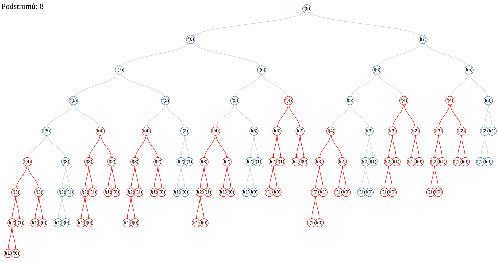

Rekurze
by Jiří Znamenáček
Úvod
S rekurzí jsme již vydatně setkali u Karla, který by bez ní nedokázal vůbec řešit spoustu zajímavých úloh. Obecně se jedná o rozklad řešení problému na sekvenci stejných, avšak v jistém smyslu jednodušších problémů. Klasickým příkladem bývá výpočet faktoriálu:
6! = 6∙5! = 6∙5∙4! = 6∙5∙4∙3! = 6∙5∙4∙3∙2! = 6∙5∙4∙3∙2∙1! = 6∙5∙4∙3∙2∙1
Vidíme, že určit faktoriál nějakého čísla znamená vynásobit tímto číslem faktoriál čísla o jedničku menšího. Přitom toto postupné zjednodušování se zastaví na faktoriálu jedničky (případně nuly).
Rekurze s jednou větví – faktoriál
def faktorial(n):
if n == 0:
return 1
else:
return n * faktorial(n-1)
>>> faktorial(5)
120
>>> faktorial(15)
1307674368000
def faktorial(n):
if n == 0:
return 1
return n * faktorial(n-1)
Graf průběhu výpočtu
Z hlediska rekurzivního volání funkce je faktoriál extrémně jednoduchým stromem – každý uzel má pouze jednoho potomka:
Tento strom volání je konečný, jinak by příslušná rekurze nikdy neskončila!
Rekurze se dvěma větvemi – n-tý člen Fibonacciho posloupnosti
Spočítat rekurzivně n-tý člen Fibonacciho posloupnosti je mnohem zajímavější úloha:
def fib(n):
if n<= 1:
return n
else:
return fib(n-1) + fib(n-2)
>>> [fib(n) for n in range(11)]
[0, 1, 1, 2, 3, 5, 8, 13, 21, 34, 55]
V něm totiž každé zavolání funkce vyvolá dva nové rekurzivní kroky! (Samozřejmě až na koncový případ, tzv. kotvu rekurze, kdy se rovnou vrátí zpět po rekurzivním řetězci nahoru příslušné číslo.)
Graf průběhu výpočtu
Ukažme si rozpis stromu volání pro pouhý devátý člen Fibonacciho posloupnosti:

Přitom jsem červeně vyznačil části výpočtu, které mají za úkol zjistit hodnotu čtvrtého členu – jak můžete vidět, v našem programu se tento konkrétní člen počítá nezávisle na sobě hned osmkrát!
PS: Fibonacciho posloupnost s jedním rekurzivním voláním
Přímočaré řešení není samozřejmě jediné možné, stejně tak dobře můžete prvky Fibonacciho posloupnosti počítat pouze s jedním rekurzivním voláním:
Nebo na rekurzi rovnou úplně zapomenout a přepsat tenhle výpočet pomocí „obyčejné“ smyčky:
Pravda, tady už se člověk – často právě narozdíl od přímočarého zápisu rekurzivního algoritmu! – musí zamyslet, jak program vlastně funguje.
Paměťová náročnost rekurzivních algoritmů
Jelikož si zjevně virtuální počítač (vykonávající náš program) musí před každým rekurzivním voláním uložit aktuální stav programu, aby se k němu po vykonání rekurzivních volání dokázal vrátit,..
.., a že počet těchto volání může růst pěkně rychle,..
..nepřekvapí, že jsou rekurzivní algoritmy ve své základní podobě pěkně „nenažrané“. Některé jazyky se o to dokážou postarat, Python mezi ně však nepatří a má tak nepřekvapivě na počet rekurzivních kroků pevně stanovenou hranici, většinou kolem tisíce zanořených volání (a když ji překročíte, setkáte se v posledních verzích s výjimkou RecursionError).
Časová náročnost rekurzivních algoritmů I
Rozklad úlohy na podúlohy pomocí rekurze je sice často ten nejpřirozenější možný, ovšem z hlediska programování však ve stejnou chvíli většinou ten nejnešikovnější.
Zatímco ve výše uvedeném případě faktoriálu se vlastně pro každé vstupní číslo spočítá zároveň i faktoriál každého čísla menšího, a to při každém volání a pokaždé znovu, tak už takový n-tý člen Fibonacciho posloupnosti počítaný rekurzivně to zvládá několikrát již během jediného volání (v našem výpočtu devátého členu se kupříkladu čtvrtý počítal hned osmkrát). A to pouhá dvouvětvová rekurze je ještě velmi jednoduchý případ…
Narozdíl od počtu zanoření do rekurze zde většinou neexistují žádná omezení z hlediska vlastního jazyka – přirozeným omezením je totiž jednoduše už to, že při jen trošku složitějších úlohách se prostě nedočkáte výsledku.
Časová náročnost rekurzivních algoritmů II
Zatímco časová náročnost rekurzivního výpočtu faktoriálu je zjevně lineární (pro vyšší se číslo prostě jen bude víckrát násobit), u Fibonacciho posloupnosti jde už o exponenciální (jak je už zhruba vidět z počtu 2n volání dané funkce pro každou hladinu stromu) a existují i algoritmy, jejichž složitost roste dokonce faktoriálně.
Ukažme si pro zajímavost jejich časové nároky pro vybraný počet vstupů (zaokrouhleno):
| 10 | 20 | 30 | 40 | |
|---|---|---|---|---|
| n | 10 | 20 | 30 | 40 |
| 2n | 103 | 106 | 109 | 1012 |
| n! | 4×106 | 2×1018 | 3×1032 | 8×1047 |
Pokud budeme pro zjednodušení předpokládat, že počítač vykoná za jednu sekundu jednu miliardu operací, vstup z posledního sloupečku zabere pro lineární algoritmus 0,00000004 sekundy, pro exponenciální už skoro 17 minut a pro faktoriální dokonce 2,5×1031 let!
Praktické použití rekurze
Z předchozího slajdu by se mohlo zdát, že vede-li řešení úlohy na rekurzivní algoritmus, můžeme to pro jen trošku větší vstupní data rovnou zabalit. Naštěstí tomu tak není – za pomoci různých technik se dají rekurzivní algoritmy výrazně zrychlit a vzdávat se jejich názornosti tak nemusíme.
Prakticky se tedy vyplatí odladit si rekurzivní algoritmus na malém množství vstupních dat, následně ho nějakou technikou zrychlit a až teprvé poté do něj dat předhodit více. A také víc než kde jinde – sednout si s tužkou a papírem a spočítat si, zda se řešení uvedeným postupem vůbec máte šanci dočkat ^_~
PS: Koncová rekurze („tail call“)
Je-li rekurzivní volání posledním místem výkonného kódu funkce (tedy funkce po něm již pouze vrací hodnotu), je možné rekurzivní volání – tedy sekvenci „ulož návratové informace a vyvolej rekurzivní krok“ – přepsat na přímé volání následujícího kroku bez návratu zpět. Díky tomu:
- na každý rekurzivní krok se ušetří místo v paměti vyhrazené dříve pro návratové informace;
- vykonávání kódu se zrychlí vynecháním „režije“ potřebné na obsluhu klasických rekurzivních volání.
Tato na první pohled banálně vypadající optimalizace* je často velice významná. Celá třída úloh se tak stává rekurzivně vůbec naprogramovatelnými, protože při běžné rekurzi by jejich obsluha velmi rychle „zlikvidovala“ dostupné paměťové místo i výpočetní čas.